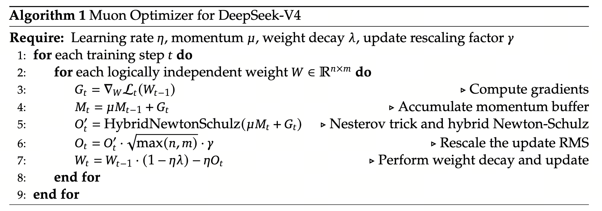

Muon — 矩阵参数的指南针
为什么 AdamW 在大矩阵参数上"偏科"，Muon 怎么用 Newton–Schulz 一招治本，以及为什么 V4 还要把它改成 Hybrid 两段式。
Muon = Matrix-aware update via Orthonormalization（让更新矩阵的奇异值全是 1）
一句话：把每步更新矩阵 $M$ 的奇异值全部抹成 1，只留方向、扔掉幅度。 这样无论梯度的"主方向"多猛，最终落到权重上的更新都是各方向同权 —— 治掉了 AdamW 在大矩阵参数上"主方向独大"的偏科病。 技术核心是用 Newton–Schulz 5 次多项式迭代 替代 SVD，10 步固定迭代就能完成，FLOPs 开销 ~5%。
- AdamW（被替代的对象）
- 主流优化器。更新规则逐元素：每个 entry $W_{ij}$ 单独除以自己的二阶矩 $\sqrt{v_{ij}}$。把矩阵参数当 $nm$ 个独立标量，看不见矩阵的"形状"，于是各向异性的梯度被原样投到权重上。
- Polar 分解（Muon 想要的目标）
- 对任意矩阵 $M = U\Sigma V^T$，Polar 分解 $\mathrm{Polar}(M) = UV^T$ —— 奇异方向不变，奇异值全替换成 1。这是几何上离 $M$ 最近的"部分等距"矩阵。每方向同等量级更新，治偏科。
- Newton–Schulz（NS）迭代
- 用矩阵多项式 $M \leftarrow aM + b(MM^T)M + c(MM^T)^2 M$ 反复套，把奇异值往 1 上推。本质是对每个 $\sigma$ 独立施加一个标量五次多项式 $p(\sigma) = a\sigma + b\sigma^3 + c\sigma^5$。$U, V$ 自始至终不变。避免 SVD 的 $O(n^3)$ 代价。
- Hybrid 两段式（V4 的工程改进）
- 前 8 步用激进系数 $(3.4445, -4.7750, 2.0315)$ 把"远离 1 的奇异值"快速抓回 1 附近；后 2 步切回标准系数 $(2, -1.5, 0.5)$ 在 1 邻域做二阶收敛精修。10 步固定 = 编译期常数，对 TileLang kernel / CUDA graph 友好。
- Nesterov 动量
- $N_t = \mu M_t + G_t$（先按 momentum 走一步再用当前梯度修正）。比标准动量多一阶前瞻信息，长期收敛更快。Muon 论文标配。
- RMS 重缩放因子 $\sqrt{\max(n,m)}\cdot\gamma$
- NS 输出的 Frobenius 范数 $= \sqrt{\min(n,m)}$ —— 矩阵越扁、范数越小。乘 $\sqrt{\max(n,m)}$ 抹平 shape 依赖，再乘 $\gamma\approx 0.2$ 调到与 AdamW 同档 lr。跨层一个 lr 通用。
- QK-Clip（被扔掉的补丁）
- V3 时代的稳定性补丁：把 $QK^T/\sqrt{d_k}$ 强制 clamp 到 $[-c, c]$ 防 softmax 溢出。V4 在 attention 内对 Q/K 各加一次 RMSNorm 后，$|q\cdot k|\le d_h$ 自然有界，QK-Clip 的整段 if-else 直接删掉 —— 这就是工程哲学："能根因消除就不要再加补丁"。
1. 先看 AdamW 哪里不够
要理解 Muon 为什么必要，得先看 AdamW 在矩阵参数上犯了什么病。Transformer 里的 Linear 层、Q/K/V 投影、FFN up/down，都是 (n, m) 维矩阵 $W$。AdamW 的更新规则是逐元素的：
其中 $m_{ij}$ 是梯度一阶矩，$v_{ij}$ 是二阶矩。换句话说 —— AdamW 把矩阵摊平当成 $n\times m$ 个独立标量来调，完全不知道这些数排列在一起其实是个矩阵。
这条 AdamW 更新做的事，对每个矩阵 entry 都是"先看历史平均梯度方向 $m$，再除以这个 entry 的历史梯度大小 $\sqrt{v}$，最后乘学习率"：
- $m_{ij}$ 是平滑后的梯度：相当于"这个位置最近 $\sim 1/(1-\beta_1)$ 步的平均下降方向"；
- $\sqrt{v_{ij}}$ 是该 entry 的"梯度幅度"：经常梯度大的 entry 自动取小步、罕见梯度大的取大步 —— 逐 entry 自适应 lr；
- $\epsilon$：防 0 除。
问题不出在哪个 entry —— 而是整个矩阵的形状信息从公式里消失了。$\sqrt{v_{ij}}$ 只看 entry $(i,j)$ 自己的历史，看不见同一行/列其它 entry 在共同贡献某个奇异方向。这就是接下来要展开的"主方向独大"问题。
这看起来无害，但在大模型里会出事。把梯度矩阵 $G$ 做奇异值分解：
- $U$ 的列向量：梯度在输出空间的主方向；
- $V$ 的列向量：梯度在输入空间的主方向；
- $\sigma_i$：第 $i$ 对方向上的"幅度"，$\sigma_1 \gg \sigma_r$ 是常态。
- $\sigma_1$（最强方向）通常在 $10^{-1}$ 量级；
- $\sigma_r$（最弱方向，$r=\min(n,m)$）通常在 $10^{-4} \sim 10^{-3}$ 量级；
- 比例 $\sigma_1/\sigma_r \approx 10^2 \sim 10^3$。
AdamW 把矩阵参数当 vector，看不见矩阵的"形状"，于是各向异性的梯度被原样投到权重上，奇异值谱越走越歪 —— 这是稳定性问题的根源之一。要靠 grad clip / lr warmup / QK-Clip 等一堆补丁才能稳。
2. Muon 的几何直觉：让更新成为"近似正交矩阵"
Muon 的核心思想一句话：把更新矩阵 $M$ 的奇异值全部强行抹成 1，只留方向、扔掉幅度。这等价于求 $M$ 的 polar 分解：
$U V^T$ 在数学上叫"离 $M$ 最近的部分等距"，几何上的意义是：
- 它和 $M$ 共享所有奇异方向（$U$、$V$ 不变）；
- 但所有 $\sigma_i$ 都被替换成 1 —— 每个方向都得到同等量级的更新。
Polar 分解 $UV^T$ 这一步翻成大白话就是"保留方向，抹掉强弱"：
- $U$ 和 $V$ 是方向：分别说明"梯度在输出空间偏向哪些方向"和"在输入空间偏向哪些方向"；
- $\Sigma$ 是强弱：每个方向上有多大的"动量"；
- 把 $\Sigma$ 替换成 $I$（全 1）：方向保留、强弱抹平 —— 强方向不再过冲、弱方向不再被忽视。
对 AdamW 病灶的对应关系：AdamW 治不了"主方向独大"，是因为它只看每个 entry；Polar 直接从奇异值层面动手，把"独大"那一项 $\sigma_1$ 直接拍回 1，等于在源头切掉了过冲源。
这正好对症 §1 那个病：既然 AdamW 治不了"主方向独大"，Muon 就从源头让更新各方向同权。剩下的问题只有一个 —— 怎么不做 SVD 也能算出 $UV^T$？因为对每层每步都做 SVD 在 LLM 规模上是不现实的（$O(\min(n,m)^2 \cdot \max(n,m))$）。
全模型 ~600 个 2D 参数 × 每步 SVD = $9 \times 10^{14}$ FLOPs/step，比 forward+backward 总和（约 $5 \times 10^{14}$）还多。每步训练光做 SVD 就翻倍开销，不可接受。
NS 迭代代替方案：每步 5 次 matmul × 10 步 = 50 matmul，每个 matmul $\sim n m \cdot \min(n,m)$。总开销 $\sim 50 \times 28672 \times 7168 \times 7168 \approx 7 \times 10^{13}$ FLOPs。~5% 的 forward 开销，可承担。
SVD 是什么：任意矩阵 $M = U\Sigma V^T$ 把单位圆线性变换成椭圆 —— 椭圆的两个半轴长度就是 $\sigma_1, \sigma_2$，半轴方向就是 $U$ 的两列。所以"奇异值"不是抽象概念，它是椭圆有多扁的几何度量；$\sigma_1/\sigma_2$ 越大，椭圆越扁。
Polar 的几何意义：$\mathrm{Polar}(M) = UV^T$ 把所有 $\sigma$ 替换成 1 = 把椭圆挤回单位圆（绿色）。方向（$U, V$ 决定的旋转）保留，但拉伸抹除 —— 这就是"奇异值归 1"的几何含义。
NS 为什么只动 σ：把迭代 $M_{k+1} = aM + b\,MM^TM + c\,(MM^T)^2 M$ 写在 SVD 坐标里就是 $U(a\Sigma + b\Sigma^3 + c\Sigma^5)V^T$ —— $U, V$ 永远不动。表现在图里：红线方向永远不变，只有长度在缩放。
玩法：按"Hybrid 跑完 10 步"看红椭圆从又扁又长逐渐胀大，σ 数轴上两个红点向中间的 target=1 收拢。8 步激进会有几次过冲（红椭圆短暂胖一下越过绿圆），最后 2 步标准 NS 二阶收敛把它精确钉死在单位圆上。
3. Newton–Schulz：用 5 次 matmul 近似 polar
Newton–Schulz（NS）迭代是把SVD 计算换成矩阵多项式的经典手法。一次 NS 迭代写为：
关键观察：把这个迭代对角化到 $M$ 的奇异空间里 —— $\sigma$ 就独立地按下面这个标量多项式演化：
也就是说，每次 NS 迭代的本质是对每个 $\sigma_i$ 独立地施加同一个五次多项式，希望迭代足够多次后 $\sigma_i \to 1$。$U$、$V$ 自始至终不变 —— 这正是 polar 分解所需的。
这条 NS 迭代为什么能"只改奇异值不改方向"？
- $M M^T M$ 项：写在奇异空间就是 $U\Sigma V^T \cdot V\Sigma U^T \cdot U\Sigma V^T = U\Sigma^3 V^T$ —— $U, V$ 完全不变，只是奇异值变成 $\sigma^3$；
- $(MM^T)^2 M$ 项：同理变成 $U\Sigma^5 V^T$；
- 整体合起来：$M_{k+1} = U\,(a\Sigma + b\Sigma^3 + c\Sigma^5)\,V^T$。这就证明了：$U, V$ 永远不动，每个 $\sigma_i$ 独立按 $p(\sigma)=a\sigma+b\sigma^3+c\sigma^5$ 走。
所以选系数 $(a, b, c)$ 的目标变得极清晰：找一个五次多项式 $p$，让区间 $(0, \sigma_{\max}]$ 上每个 $x$ 反复套 $p$ 后都收敛到 1。下面的 demo 直接画出两组系数的 $p(x)$ 曲线。
选择系数 $(a,b,c)$ 的目标就一句话：让 $p(x)$ 在 $x \in (0, \sigma_{\max}]$ 上稳定地把所有点拉向 1。两套经典选择：
| 系数 | (a, b, c) | $p(x)$ 性质 | 问题 |
|---|---|---|---|
| 标准 NS | (2, −1.5, 0.5) | 在 $x = 1$ 附近二阶收敛（误差平方下降） | $\sigma$ 远离 1（如 0.05）时收敛极慢，需要几十步 |
| 激进 NS | (3.4445, −4.7750, 2.0315) | 在 $x \in (0, 1)$ 上"抓得很猛"，几步把小 $\sigma$ 拉到 1 附近 | 在 $x \approx 1$ 附近会过冲（$p(1) > 1$），多次迭代后开始振荡 |
蓝点是 20 个奇异值 $\sigma_i$（初始随机分布在 $[0.05, 1.0]$）。每按"激进 1 步"应用一次红色多项式，每按"标准 1 步"应用一次绿色多项式。 观察 1：激进多项式在 $\sigma$ 较小（如 0.1-0.5）时抓得猛，几步就能把它们拉到 1 附近；但红线在 $\sigma=1$ 附近高于 1，反复套会过冲。 观察 2：标准多项式在 $\sigma\approx 1$ 附近紧贴 $y=1$，已经聚拢的奇异值会被精修到 $1\pm 10^{-6}$，但 $\sigma=0.1$ 处它几乎只是恒等线，慢得离谱。 "Hybrid 跑完 10 步"：8 红 + 2 绿 = 所有 $\sigma$ 都精确收到 1。这就是 V4 选 Hybrid 的图像直觉。
4. 为什么 V4 要做 "Hybrid 两段式 10 步"
这是 V4 相对原 Muon 论文的关键工程改进。把上面两套系数串联：
- 前 8 步用激进系数 —— 把所有奇异值快速拉到 1 的邻域。激进多项式的过冲问题不要紧，因为"远处 $\sigma$"还差得远，当前根本到不了过冲区。
- 后 2 步切回标准系数 —— 此时所有 $\sigma$ 已经聚到 $\approx 1$ 附近，标准 NS 二阶收敛极快，2 步就能把它们钉在 $1 \pm 10^{-6}$。
激进系数像大锤，能把奇异值的"远端"快速敲到 1 附近，但敲过头会反弹；标准系数像螺丝刀，只在 1 的邻域里管用，但一拧就到位。 把两个工具按序使用，正好能把单段会失败的两端问题都覆盖住。
- 纯激进 30 步：第 5 步 $\sigma$ 已到 $\sim 1.05$（轻微过冲），之后开始振荡，10 步后 $\sigma \in [0.94, 1.08]$ 反复；
- 纯标准 30 步：第 1 步 $p(0.05) \approx 0.10$，第 2 步 $\approx 0.20$，第 5 步 $\approx 0.55$，第 10 步 $\approx 0.92$，第 20 步才 $\approx 0.999$ —— 慢；
- Hybrid 8 + 2：激进 8 步把 $\sigma$ 推到 $\sim 0.998$（已在标准的二阶收敛区）；标准 2 步把 $\sigma$ 钉到 $1 \pm 10^{-6}$。
这套组合的工程收益是：用固定 10 次迭代就能保证 polar 近似的精度，不需要再为不同层、不同 step 调"该迭代多少次"。常数 10 也意味着 NS 这一步的 FLOPs 在编译期就确定，对 TileLang kernel 与 CUDA graph 友好。
5. 完整算法：每个符号到底是什么
- Initialize $M_0 \leftarrow 0$；$t \leftarrow 0$
- while 未收敛 do
- $t \leftarrow t + 1$
- for each 2D 参数矩阵 $W \in \mathbb{R}^{n \times m}$ do
- $G_t \leftarrow \nabla L\!\left(W_{t-1}\right)$ ▷ 当前 step 的原始梯度
- $M_t \leftarrow \mu\, M_{t-1} + G_t$ ▷ 一阶动量（与 AdamW $\beta_1$ 同位）
- $N_t \leftarrow \mu\, M_t + G_t$ ▷ Nesterov 提前一步
- $X \leftarrow N_t \,/\, \|N_t\|_F$ ▷ 缩到 NS 收敛域内
- for $k = 1$ to $8$ do ▷ 第 1 段：激进 NS 粗调
- $X \leftarrow 3.4445\, X - 4.7750\, (XX^{T})X + 2.0315\, (XX^{T})^{2}X$
- end for
- for $k = 1$ to $2$ do ▷ 第 2 段：标准 NS 精修
- $X \leftarrow 2\, X - 1.5\, (XX^{T})X + 0.5\, (XX^{T})^{2}X$
- end for
- $O_t \leftarrow X \cdot \sqrt{\max(n,m)} \cdot \gamma$ ▷ RMS 重缩放，抹平 shape 依赖
- $W_t \leftarrow (1 - \eta\lambda)\, W_{t-1} - \eta\, O_t$ ▷ 解耦 weight decay + 步进
- end for
- end while
- return $W_t$

| 符号 | 含义 | 典型值 / 来源 |
|---|---|---|
| $G_t$ | 第 $t$ 步的原始梯度矩阵 | 反向传播得到 |
| $\mu$ | 动量系数 —— 越大越重视历史方向，越平滑 | 0.95（与 AdamW $\beta_1$ 同位） |
| $M_t$ | 动量平滑后的"历史趋势梯度" | — |
| $N_t$ | Nesterov 形式：在 $M_t$ 基础上再加一份当前梯度，等价于"提前一步看" | — |
| $O'_t$ | NS 输出，奇异值已经全是 1，但矩阵 Frobenius norm = $\sqrt{\min(n,m)}$ | — |
| $\sqrt{\max(n,m)}$ | RMS 重缩放因子，让 $O_t$ 的"平均元素大小"与 AdamW 量级一致 | 由层 shape 决定 |
| $\gamma$ | 额外缩放（论文里一般取 0.2~0.3），用来把 lr 调到与 AdamW 同档 | ≈ 0.2 |
| $\eta$ | 学习率 | 跟 AdamW 同量级，不需重新调 |
| $\lambda$ | weight decay 系数 | 0.1（同 AdamW） |
整个 Muon 一步算下来，可以分四段读：
- 动量 + Nesterov（第 6-7 行）：$M_t$ 是历史平滑梯度，$N_t$ 是再加一份当前梯度的"前瞻版"；
- 归一化进入 NS 收敛域（第 8 行）：除以 $\|N_t\|_F$ 让所有奇异值落进 $(0, 1]$，这是 NS 多项式的安全工作区；
- NS 10 步（第 9-14 行）：8 步激进粗调 + 2 步标准精修，输出 $X$ 的所有奇异值都精确等于 1，矩阵 $\approx UV^T$；
- RMS 重缩放 + weight decay（第 15-16 行）：把 $X$ 乘 $\sqrt{\max(n,m)}\cdot\gamma$ 调到与 AdamW 同档量级，再做"先 decay 后步进"的解耦更新。
对比 AdamW 整段公式只有 1 行（$W \leftarrow W - \eta m / \sqrt{v}$），Muon 多了 NS 10 步——但每步只是 5 次 matmul，且和 forward 共享相同的 Tile/Kernel 实现，CUDA Graph 上 amortize 后是 ~5% 开销。
为什么要乘 $\sqrt{\max(n,m)}\cdot\gamma$？ 因为 NS 把奇异值全压到 1，所以 $\|O'_t\|_F = \sqrt{\min(n,m)}$ —— 矩阵越扁，Frobenius 范数越小。如果直接拿 $O'_t$ 当更新，宽矩阵的步长就会偏小、扁矩阵反而偏大。乘 $\sqrt{\max(n,m)}$ 把这个 shape 依赖抹平，再用 $\gamma$ 调到合适量级 —— 这样同一个 $\eta$ 可以跨层复用。
- 层 A：$1024 \times 1024$ (方阵)，NS 后 $\|X\|_F = \sqrt{1024} = 32$；
- 层 B：$256 \times 4096$ (扁矩阵)，NS 后 $\|X\|_F = \sqrt{256} = 16$（注意是 $\sqrt{\min}$）；
乘 $\sqrt{\max(n,m)}$：层 A 乘 $\sqrt{1024}=32$，输出范数变 $32 \times 32 = 1024$；层 B 乘 $\sqrt{4096}=64$，输出范数变 $16 \times 64 = 1024$。两层对齐，跨层一个 $\eta$ 就够。
为什么用 Nesterov？因为 $N_t = \mu M_t + G_t$ 等价于"先按 momentum 走一步，再用当前梯度修正"，比标准 momentum 多一阶前瞻信息，长期收敛更快。这是 Muon 论文里就有的标配，V4 沿用。
6. 顺手扔掉 QK-Clip：根因消除胜过补丁
V3 里有一个"挽救 attention 数值稳定"的补丁叫 QK-Clip：每步前向把 $QK^{T}/\sqrt{d_k}$ 的 logits 强制 clamp 到 $[-c, c]$，防止 softmax 上溢出。它治的不是病因，是病的表现。病因是：Muon 把 W 各方向同权更新后，乘以输入仍可能产生大幅 query / key 向量，再做 $Q K^T$ 时点积爆掉。
V4 的解法是从源头堵：在 attention 内部直接对 Q、K 各做一次 RMSNorm，使
所以 QK-Clip 整条 if-else 路径可以直接删掉。这不是写法精简 —— 它是 V4 的工程哲学：能用根因消除就不要再加补丁。一个补丁少一份调参负担、少一个炸点、少一行 kernel 分支。
7. 代价 / 还没解决的问题
- NS 的 FLOPs 开销：每个 2D 参数每步多 10 次 matmul（若 $W$ 为 $n\times m$，等量级是 $10\,nm\cdot\min(n,m)$）。在 V4-Pro 规模上，这部分相比 forward+backward 大约多 3~5%。可接受，但不是免费。
- 不适用于 1D 参数：embedding 表（虽是 2D，但行间语义无关，做 polar 没意义）、RMSNorm 的 scale、prediction head、mHC 静态偏置等，仍走 AdamW —— V4 主体参数是 Muon，但整个模型并不是单一优化器。
- 超参没有"自动归一"：Muon 把更新方向归一化了，但 $\eta$、$\mu$、$\lambda$ 仍要按数据 / 模型 scale 调；它解决的是"AdamW 的方向偏"，不是"超参不需调"。
- 对极小 batch / 极不稳数据敏感：当 $G_t$ 本身因 batch 太小而高方差时，NS 后的"方向"也会高方差，反而比 AdamW 更糙。所以 Muon 适合大 batch、稳定 dataset，与 V4 的 32T 预训练设定恰好匹配。
AdamW 不知道矩阵的形状，Muon 把所有奇异值抹成 1 来强制各向同性更新；NS 是 polar 的便宜近似，Hybrid 两段式让 10 步固定迭代就能落到精度。代价是 ~5% FLOPs，回报是稳定性 + 可以扔掉 QK-Clip 这种补丁。